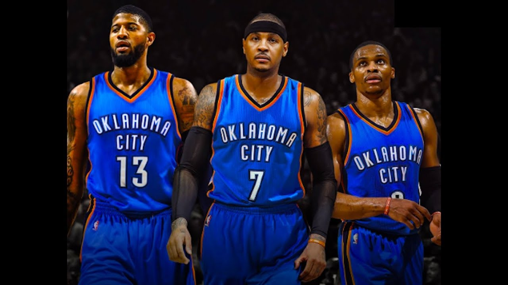

1 / 3
Lebron James
2 / 3

The Oklahoma City Thunder
3 / 3

I am an avid basketball fan and follow the Oklahoma City Thunder who are a team that play in the NBA. I am also a huge fan of Lebron James who plays for the Cleveland Cavaliers, James is widely regarded as the best basketball player in the world and it is debated whether he is the best of all time ahead of Michael Jordan.
History of Basketball:
The history of basketball began with its invention in 1891 in Springfield, Massachusetts by Canadian physical education instructor James Naismith as a less injury-prone sport than football. The game became established fairly quickly and grew very popular as the 20th century progressed, first in America and then throughout the world. After basketball became established in American colleges, the professional game followed. The American National Basketball Association (NBA), established in 1946, grew to a multibillion-dollar enterprise by the end of the century, and basketball became an integral part of American culture.
I played rugby for almost ten years with Waterpark RFC until I injured my back and was advised by doctors to stop playing. Although I still play recreationally as I love the sport.